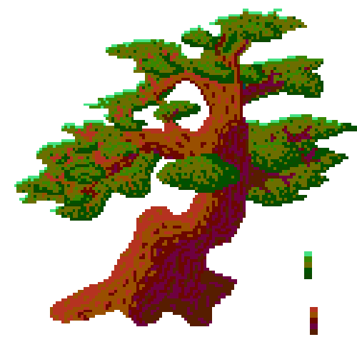

the living-room
Welcome to my cozy little home in the digital realm. This website is currently javascript free. I don't enjoy using frameworks, so i have yet to optimize this site for responsive design. I reccommend using a desktop monitor for optimal UX. While I do use social media for professional reasons, I dont enjoy scrolling. My Github and LinkedIn profiles are linked under the office as well as the footer on each webpage. If you would like to keep up with me parasocially, I will tend to this website as my digital garden. I am planning to eventually set up RSS feeds for my blogs, so please stay tuned.

notes:
At this point in time, I am persuing a carreer in IT. I am particularly interested in defensive security. If you are a like-minded tech enthusiast or a potential employer, I reccommend checking out my blog Juniper's Lab
if you are a lurk just stopping by, check out my bedroom. i hope u enjoy what you find. stay curious my friend!
Before you go, dont forget to leave a comment in my guestbook i would love to see what you think about this place.